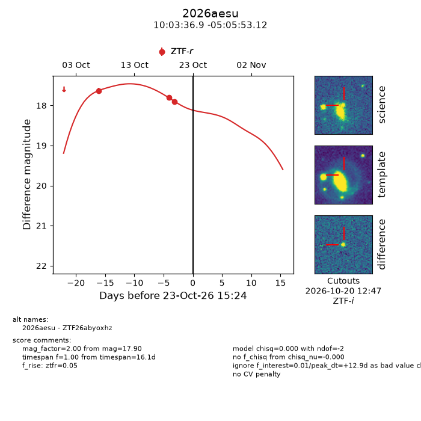
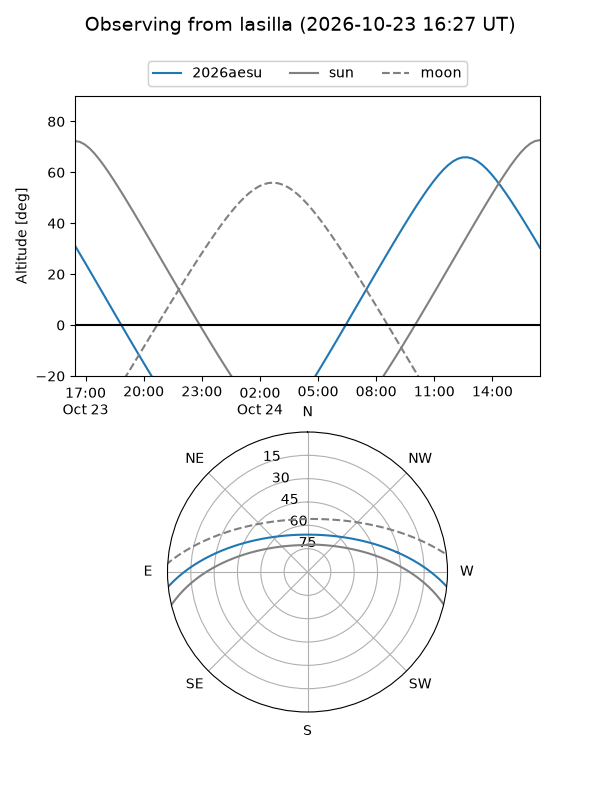
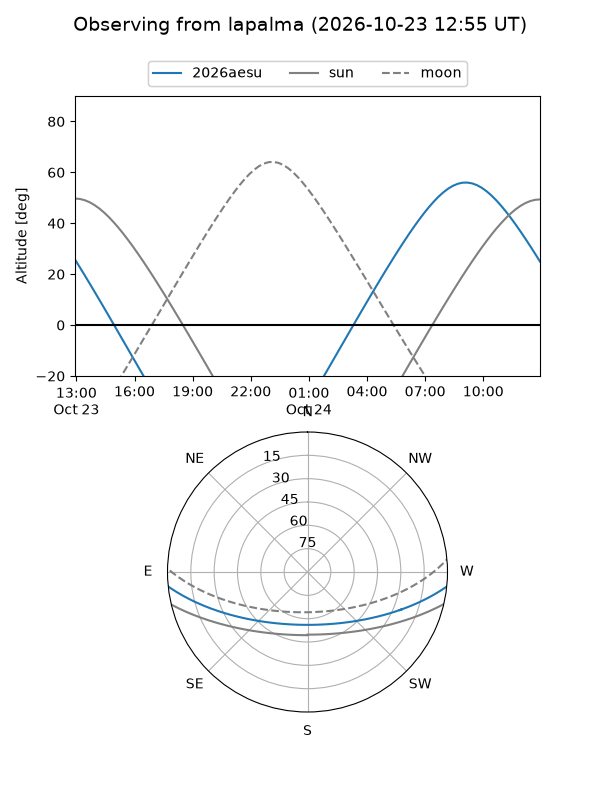
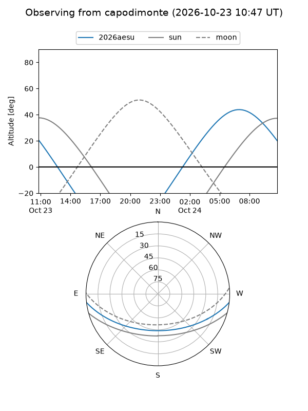
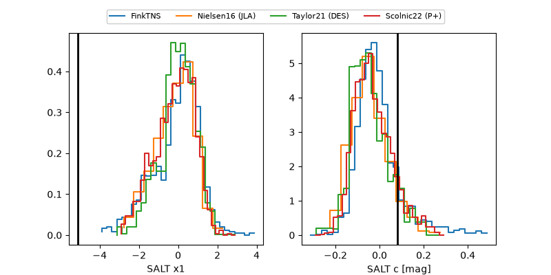

2026aesu
Target 2026aesu at 2026-10-23 15:26
Aliases and brokers:
FINK-ZTF: ztf.fink-portal.org/ZTF26abyoxhz
Lasair-ZTF: lasair-ztf.lsst.ac.uk/objects/ZTF26abyoxhz
ALeRCE-ZTF: alerce.online/object/ZTF26abyoxhz
YSE-PZ: ziggy.ucolick.org/yse/transient_detail/2026aesu
TNS name: wis-tns.org/object/2026aesu
Direct TNS query: direct search
alt names
ZTF26abyoxhz (ztf,fink_ztf)
2026aesu (tns,yse)
Coordinates:
equatorial (ra, dec) = 150.9038,-5.09809
equatorial (HMS+DMS) = 10:03:36.91,-05:05:53.12
galactic (l, b) = (244.9774,+38.22222)
Flags:
peak dt: +12.9
Photometry:
last ztfr=17.90
3 ztfr detections
Lightcurve

Visibility



Additional plots
